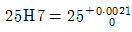
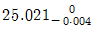
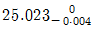
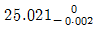
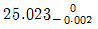
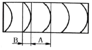

사출(프레스)금형산업기사 (2011-08-21 기출문제)
1과목: 금형설계
1. 프레스금형에서 펀치와 다이의 위치를 정확히 유지하고 금형의 정도와 생산성을 향상시키며 수명을 연장시키는 금형 부품은 무엇인가?
- 다이 세트
- 펀치 플레이트
- 백킹 플레이트
- 다이 홀더
(정답률: 78%)

2. 펀치 둘레에 붙어있는 스크랩이나 스트립을 떼어주는(벗겨주는) 기능을 갖고 있는 부품은?
- 녹아웃
- 셰더
- 키커
- 스트리퍼
(정답률: 58%)
3. 메달이나 화폐 등의 제작에 사용되는 가공을 무엇이라 하는가?
- 플랜징
- 코이닝
- 컬링
- 업세팅
(정답률: 93%)
4. 블랭킹된 전단면의 버(burr) 발생 원인으로 가장 큰 것은?
- 펀치와 다이의 날끝 마모
- 윤활유
- 스트리핑력의 부족
- 다이 내면의 릴리프 부족
(정답률: 90%)
5. 치수 ø30㎜로 블랭킹 제품을 얻기 위해 클리어런스를 적용하였을 때, 다음 중 가장 알맞은 것은?
- 펀치를 ø30㎜로 하여야 한다.
- 펀치를 ø30.03㎜로 하여야 한다.
- 다이를 ø30㎜로 하여야 한다.
- 다이를 ø30.03㎜로 하여야 한다.
(정답률: 50%)
6. 순차이송 금형(Progressive die)에서 할 수 없는 가공법은?
- 노칭
- 엠보싱
- 스피닝
- 드로잉
(정답률: 60%)
7. 소재 이송장치 중 소재의 재질이나 표면의 상태에 제한이 없고, 코일재와 프로그레시브 금형을 사용하여 고능률로 자동가공할 때 사용하는 피더는?
- 그리프 피더
- 푸셔 피더
- 산업용 로봇
- 롤 피더
(정답률: 80%)
8. 압인, 사이징 등의 압축 가공에 적합하며 현재는 냉간단조에 가장 많이 사용되고 있는 프레스 기계는?
- 너클 프레스
- 링크 프레스
- 마찰 프레스
- 크랭크 프레스
(정답률: 75%)
9. 제품의 외경이 40㎜이고, 높이가 30㎜인 제품을 2.0㎜의 강판으로 드로잉한다면 이때 드로잉에 필요한 힘은 약 몇 kgf인가? (단, 소재의 최대인장강도는 40kgf/mm2이다.)
- 7636
- 8038
- 9546
- 10048
(정답률: 41%)
10. 소요 공정수에 상당하는 대수의 프레스 기계를 병렬로 배치한 프레스 라인을 통해 가공제품을 이송하여 각 기계간의 흐르게 하는 방법은 무슨 가공인가?
- 트랜스퍼 가공
- 프로그레시브 가공
- 순차이송 가공
- 자동기계 가공
(정답률: 65%)
11. 보스 설계 시 유의사항에 해당하지 않는 것은?
- 높이가 높은 보스는 피하는 것이 좋다.
- 보스를 높게 할 필요가 있을 때, 보스 측 벽에는 리브를 붙이지 않는다.
- 살 두께가 두꺼우면 싱크마크의 원인이 되므로 고려한다.
- 보스가 다리 역할을 할 경우, 4개 이상의 경우는 높이를 맞추기 어려우므로 3개로 한다.
(정답률: 68%)
12. 성형품 불량 중에서 싱크 마크가 생기는 원인과 관계가 없는 것은?
- 형체력이 부족
- 성형품 두께가 불균일
- 냉각이 불균일
- 성형압력이 부족
(정답률: 53%)
13. 러너리스 금형의 특징이 아닌 것은?
- 성형품의 품질이 우수하다.
- 성형재료비가 경감되고 생산시간이 단축된다.
- 소량 생산에서도 효과를 기대할 수가 있다.
- 금형의 설계와 보수에 고도의 기술이 요구된다.
(정답률: 58%)
14. 사출금형에서는 2매 구성 금형과 3매 구성금형으로 구분하는데, 2매 구성 금형에는 없으며 3매 구성 금형에 있는 부품은 어느 것인가?
- 고정측 설치판
- 이젝터 플레이트
- 러너 스트리퍼 플레이트
- 스페이서 블록
(정답률: 89%)
15. 성형수축률이 2%인 어떤 성형품의 호칭치수가 200㎜일 경우, 상온에서의 금형 치수로 가장 가까운 것은?
- 200.4㎜
- 202.4㎜
- 198.4㎜
- 496.4㎜
(정답률: 77%)
16. 사출금형에서 성형품을 금형 밖으로 빼내주는 기능을 갖는 부품은?
- 이젝터 핀
- 스크루 로크 핀
- 가이드 핀
- 리턴 핀
(정답률: 85%)
17. 다음 중 이젝터 플레이트를 금형 닫힘과 동시에 복귀시키는 목적으로 사용하는 부품은?
- 스톱 핀
- 리턴 핀
- 가이드 핀
- 서포트 핀
(정답률: 88%)
18. 다음 중 러너의 치수를 결정할 때 고려할 사항으로 틀린 것은?
- 러너의 굵기는 성형품의 살 두께보다 굵게 한다.
- 금형 제작 시에는 표준 커터를 사용할 수 있는 크기로 선정한다.
- 러너의 길이가 길어지면 유동저항이 커진다.
- 러너 단면형상에 따른 효율은 직사각형 단면이 가장 좋다.
(정답률: 77%)
19. 스크루의 지름 D=36㎜이고, 사출속도가 7㎝/s일 때 사출률(cm3/s)은 약 얼마인가?
- 68.20
- 71.25
- 84.45
- 96.40
(정답률: 62%)
20. 열가소성 수지로서 비결정성이며, 투명성이 뛰어나 콘택트렌즈나 시계 유리 등에 사용되는 대표적인 수지는?
- POM
- HIPS
- PMMA
- LDPE
(정답률: 76%)
2과목: 기계가공법 및 안전관리
21. 두께 1.5㎜인 연질 탄소강판에 지름 3.2cm의 구멍을 펀칭할 때 전단력을 구하면 약 몇 kgf인가? (단, 전단응력 τ=25kgf/mm2이다.)
- 3700
- 3769
- 3800
- 3850
(정답률: 75%)
22. 공작물 형태가 단순한 모양에 사용될 수 있으며, 공작물의 내외면을 사용하여 공작물과 클램핑시키지 않고 작업할 수 있는 구조로 되어 있는 지그는?
- 박스 지그
- 채널 지그
- 샌드위치 지그
- 템플릿 지그
(정답률: 57%)
23. 와이어 컷 방전가공기의 특징을 옳게 설명한 것은?
- 담금질된 강이나 초경합금의 가공이 가능하다.
- 공작물 형상이 복잡하면 가공속도가 변하게 된다.
- 전단여유가 많고 전가공이 불필요하다.
- 복잡한 공작물인 경우는 분할하여 가공한다.
(정답률: 65%)
24. 공작물이 절삭공구에 대하여 정확한 위치에 설치되는 위치 결정구가 갖추어야 할 사항이 아닌 것은?
- 교환이 불가능하도록 설계되어야 한다.
- 마모에 견딜 수 있어야 한다.
- 공작물과의 접촉이 쉽게 보일 수 있도록 설계되어야 한다.
- 청소하기가 쉬워야 한다.
(정답률: 92%)
25. 금형 부품의 위치 결정 방법이 아닌 것은?
- 로케이션 핀 혹은 탈착식 포스트에 의한 위치 결정
- 용접에 의한 위치 결정
- 홈에 의한 위치 결정
- 블록에 의한 위치 및 포켓 내의 인서트에 의한 위치 결정
(정답률: 90%)
26. 중량이 무거운 대형 금형에 드릴링 작업을 하려고 할 때 가장 적합한 드릴머신은?
- 탁상 드릴머신
- 레이디얼 드릴머신
- 직립 드릴머신
- 다축 드릴머신
(정답률: 78%)
27. 다음 스프링 백에 대한 설명 중 틀린 것은?
- 스프링 백이 작을수록 정밀한 제품이 얻어진다.
- 굽힘반경을 크게 할수록 스프링 백은 작아진다.
- 기계 프레스보다 액압 프레스로 긴 시간 가압하면 스프링 백은 작아진다.
- V굽힘에서는 항상 스프링 백이 외측으로 나타난다.
(정답률: 68%)
28. 연삭 가공으로 인해서 숫돌바퀴의 바깥 둘레가 변형된 것을 부품의 형상으로 바로잡기 위해서 숫돌 외형을 수정하는 작업은?
- 로딩
- 리밍
- 트루잉
- 그레이징
(정답률: 58%)
29. 금형가공용 공구로 작업할 때 안전사항으로 잘못된 것은?
- 핸드 드릴로 구멍을 뚫을 때 끝까지 힘을 준다.
- 핸드 그라인더 작업할 떄 불꽃 비산에 유의한다.
- 전기 폴리싱 작업할 때 앞치마를 착용한다.
- 사포를 사용하여 금형의 표면을 연마할 때 무리한 힘을 가하지 않는다.
(정답률: 83%)
30. 정확한 금형 조립을 위하여 금형 부품의 위치를 결정하는 필요조건이 아닌 것은?
- 각 부품의 주요 조립 부분의 치수 정밀도가 정확해야 한다.
- 금형의 분해 조립 후에도 위치의 변화가 없어야 한다.
- 금형의 사용 방법을 충분히 이해하지 않아도 된다.
- 각 부품은 충분한 강도로 고정되어 사용중 헐거워지거나 분해되지 않아야 한다.
(정답률: 91%)
31. 머시닝 센터의 공구지름 보정 설명이 잘못된 것은?
- G42(공구지름 우측 보정)
- G43(공구지름 보정 취소)
- G41(공구지름 좌측 보정)
- G40(공구지름 보정 취소)
(정답률: 79%)
32. 일반적으로 수치제어선반에서 공구의 이동위치를 지령하는 방식이 아닌 것은?
- 증분 지령 방식
- 극좌표 지령 방식
- 절대 지령 방식
- 혼합 지령방식
(정답률: 54%)
33. 치공구를 사용한 가공의 장점이 아닌 것은?
- 기계설비의 최대한 활용
- 생산력을 증대
- 특수기계, 특수공구가 불필요
- 고도로 숙련된 작업자가 필요
(정답률: 88%)
34. 절삭공구 인선의 일부가 미세하게 탈락되는 현상을 무엇이라 하는가?
- 치핑(chipping)
- 크레이터 마모(crater wear)
- 플랭크 마모(flank wear)
- 온도 파손(temperature failure)
(정답률: 59%)
35. CNC 공작기계의 어드레스에서 주축의 회전수를 지정하는 기능은?
- G기능
- S기능
- F기능
- M기능
(정답률: 88%)
36. 전해가공을 위한 전극재료의 구비조건으로 틀린 적은?
- 전기 저항이 작을 것
- 내식성이 떨어질 것
- 액압에 견딜 수 있는 강성을 가질 것
- 열전도가 좋고 융점이 높을 것
(정답률: 70%)
37. 공작물의 위치결정 뿐 아니라 절삭공구를 안내하기 위하여 공작물 위에 설치하는 장치를 무엇이라 하는가?
- 바이스
- 지그
- 바이크
- 램프
(정답률: 85%)
38. 절삭날에 가해지는 힘이 안정되고 절삭저항이 가장 작은 칩의 형태는?
- 유동형 칩
- 전단형 칩
- 열단형 칩
- 균영형 칩
(정답률: 69%)
39. 열간가공과 냉간가공의 한계를 구분하는 것은?
- 풀림 온도
- 변태 온도
- 재결정 온도
- 결정입자의 성장온도
(정답률: 82%)
40. 래핑 가공의 장점을 설명한 것으로 틀린 것은?
- 정밀도가 높은 가공을 할 수 있다.
- 가공면이 깨끗한 거울면을 얻을 수 있다.
- 가공면은 윤활성 및 내마모성이 좋다.
- 가공 복잡하고 대량생산이 불가능하다.
(정답률: 88%)
3과목: 금형재료 및 정밀계측
41. 사인바의 정밀도 검사 시 고려하지 않아도 되는 검사 항목은?
- 롤러의 중심거리
- 측정면의 평면도
- 게이지와의 접합도
- 롤러의 진원도
(정답률: 50%)
42. 한 눈금이 0.02㎜/m이고, 밑변의 거리가 250㎜인 기포관식 수준기의 기포가 3눈금 이동하였다. 이 때 수준기 밑변의 양 끝점의 높이차는?
- 0.0⑤㎜
- 0.010㎜
- 0.015㎜
- 0.020㎜
(정답률: 56%)
43. 길이 단위의 성멸 중 잘못 연결한 것은?
- 1 dm = 10-1m
- 1 ㎜ = 10-3m
- 1 ㎛ = 10-3mm
- 1 ㎚ = 10-12m
(정답률: 44%)
44. 25H7의 구멍을 가공하는 데 사용되는 공작용 Plug gauge의 KS방식에 의한 정지측 설계 치수는? (단,

, 제작공차는 0.004, 마모여유는 0.002이다.)



(정답률: 45%)
45. 옵티컬 플랫으로 게이지 블록의 평면도를 픅정한 결과가 그림과 같은 등간격 간섭무늬가 생겼다. A : B = 5 : 1이고 빛의 파장 λ = 0.64 ㎛일 때 평면도는 얼마인가?

- 0.162 ㎛
- 0.064 ㎛
- 1.284 ㎛
- 0.328 ㎛
(정답률: 57%)
46. 다음 중 마이크로미터의 기차 측정의 기준이 되는 것은?
- 다이얼 게이지(dial gauge)
- 게이지 블록(gauge block)
- 옵티컬 플랫(optical flat)
- 옵티컬 패럴렐(optical parallel)
(정답률: 47%)
47. 삼침을 이용하여 피치가 1.25㎜인 미터나사의 유효지름을 측정하고자 할 때 가장 적당한 삼침의 지름(dw)은?
- 0.5196 ㎜
- 0.5774 ㎜
- 0.7217 ㎜
- 0.7954 ㎜
(정답률: 31%)
48. 다이얼 게이지 측정값의 변환 · 확대 기구는?
- 기어
- 광학 레버
- 나사
- 스프링
(정답률: 56%)
49. 형상 정도와 관련된 측정법으로 지름법, 반지름법, 3점법으로 구별되는 측정법은?
- 평면도 측정법
- 진직도 측정법
- 직각도 측정법
- 진원도 측정법
(정답률: 77%)
50. 다음 중 우연 오차의 원인이 아닌 것은?
- 측정기 자체의 오차
- 측정대의 미소진동
- 기온이나 기압의 변화
- 측정자의 주의력 상실
(정답률: 51%)
51. 탄소강에서 적열취성(고온취성)의 원인이 되는 원소는?
- 규소
- 망간
- 인
- 황
(정답률: 71%)
52. 아공석강의 표준조직을 부식하여 현미경 관찰을 하였다. 입상의 백색 부분에 해당되는 것은?
- 페라이트
- 시멘타이트
- 펄라이트
- 오스테나이트
(정답률: 36%)
53. 기계 재료의 파단면을 관찰해 보면 무수히 많은 입자로 구성되어 있는 것을 알 수 있다. 이 작은 입자를 무엇이라 하는가?
- 결정립
- 고용체
- 공정
- 쌍정
(정답률: 64%)
54. 다음에 열거한 플라스틱 재료 중 열가소성 수지로 나열된 것은?
- 페놀, 폴리에틸렌, 폴리카보네이트
- 폴리스티렌, 아크릴, 페놀
- 폴리에틸렌, 염화비닐, 폴리아미드
- 페놀, 에폭시, 멜라닌
(정답률: 72%)
55. 다음 중 금속의 공통적인 특성이 아닌 것은?
- 열과 전기의 양도체이다.
- 수은을 제외한 금속은 상온에서 고체이며, 금속적 광택을 갖는다.
- 소서변형성이 없고 가공하기 어렵다.
- 이온화하면 양(+)이온이 된다.
(정답률: 76%)
56. 땜납의 종류는 사용 용도에 따라 여러 가지가 있으나 전기제품 접합용으로 가장 널리 사용되는 땜납의 합금성분은?
- Sn –Sb
- Sn –Cu
- Sn –Zn
- Sn –pb
(정답률: 64%)
57. 다음 중 신소재의 기능성 재료에 해당하지 않는 것은?
- 형상기억 합금
- 초소성 합금
- 제진 합금
- 포정 합금
(정답률: 53%)
58. 담금질한 강에 A1 변태점 이하의 열을 가하여 인성을 부여하고 기계적 성질의 개선을 하고자 하는 열처리는?
- 뜨임
- 질화법
- 불림
- 침탄법
(정답률: 79%)
59. 열간 단조용 금형 재료에 요구되는 일반적인 조건이 아닌 것은?
- 가공성이 좋을 것
- 열전도도가 작을 것
- 금형의 표면은 내열성이 좋을 것
- 온도 상승 및 냉각에 의한 히트 체크에 대한 내력이 클 것
(정답률: 60%)
60. 고속도강이 갖추어야 할 성질 중에서 가장 중요한 것은?
- 고온경도
- 저온천이온도
- 투자율
- 자성
(정답률: 82%)